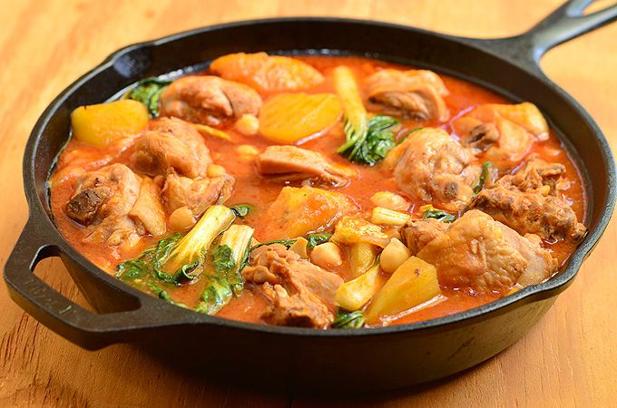
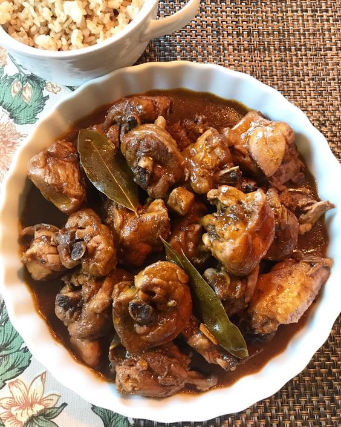
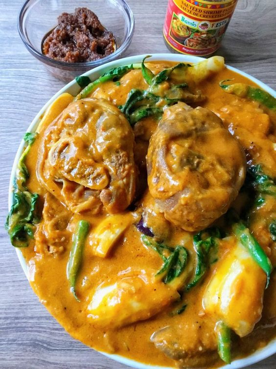
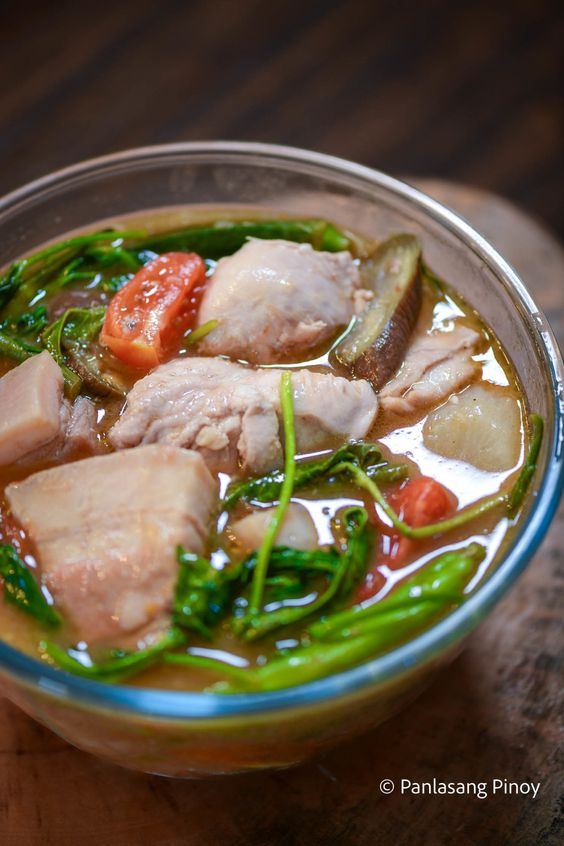

CHICKEN POCHERO

INGREDIENTS:
- Ingredient 1 ▢8 2 lbs. Chicken cut into serving pieces
- Ingredient 2 ▢1 piece Knorr Chicken Cube
- Ingredient 3 ▢2 pieces potato cubed
- Ingredient 4 ▢2 bunches baby bok choy
- Ingredient 5 ▢½ head cabbage sliced
- Ingredient 6 ▢8 ounces tomato sauce
- Ingredient 7 ▢18 pieces long green beans
- Ingredient 8 ▢2 pieces Chorizo de Bilbao sliced
- Ingredient 9 ▢8 ounces chick pea
- Ingredient 10 ▢3 pieces Saba banana sliced
- Ingredient 11 ▢2 pieces tomato diced
- Ingredient 12 ▢1 piece onion chopped
- Ingredient 13 ▢4 cloves garlic crushed
- Ingredient 14 ▢2 cups water
- Ingredient 15 ▢3 tablespoons cooking oil
- Ingredient 16 ▢Fish sauce and crushed peppercorn to taste
INSTRUCTIONS:
- Step 1 Heat oil in a cooking pot. Pan-fry the chicken for 2 minutes per side. Set aside.
- Step 2 Using the remaining oil, saute onion and garlic.
- Step 3 Add chorizo. Saute for 1 minute.
- Step 4 Add tomato. Continue to saute until onion and tomato softens.
- Step 5 Put the pan-fried chicken back into the pot. Stir
- Step 6 Pour tomato sauce and water.Let boil.
- Step 7 Add Knorr Chicken Cube. Stir and cover the pot. Cook in medium heat for 15 minutes
- Step 8 Put potato, saba banana, and chick pea into the pot. Cover and cook for 12 minutes.
- Step 9 Add long green beans and cabbage. Cover and cook for 3 minutes.
- Step 10 Add bok choy. Cook for 2 minutes. Season with crushed peppercorn and fish sauce. Stir.
- Step 11 Tranfer to a serving bowl. Share and enjoy!
PORK CALDERETA
INGREDIENTS:
- Ingredient 1 ▢2 lbs. Pork sliced into cubes
- Ingredient 2 ▢1 piece Knorr Pork cube
- Ingredient 3 ▢8 oz. tomato sauce
- Ingredient 4 ▢¾ cup green olives
- Ingredient 5 ▢1 piece red bell pepper sliced
- Ingredient 6 ▢1 piece green bell pepper sliced
- Ingredient 7 ▢2 pieces potatoes cubed
- Ingredient 8 ▢2 pieces carrot sliced
- Ingredient 9 ▢1 piece onion chopped
- Ingredient 10 ▢3 cloves garlic chopped
- Ingredient 11 ▢1 1/2 cups water
- Ingredient 12 ▢½ cup liver spread
- Ingredient 13 ▢3 tablespoons cooking oil
- Ingredient ▢Salt and ground black pepper to taste
INSTRUCTIONS:
- Step 1 Heat the oil in a cooking pot.
- Step 2 Once the oil gets hot, saute the garlic and onion.
- Step 3 Add the pork. Saute until the color turns light brown.
- Step 4 Pour-in the tomato sauce and water. Let boil.
- Step 5 Cover and cook in low heat for 60 minutes.
- Step 6 Add the liver spread. Stir and cook for 3 minutes.
- Step 7 Put-in the potato and carrot. Cover and cook for 8 to 10 minutes.
- Step 8 Add the olives and bell peppers.
- Step 9 Cook for 5 minutes.Season with salt and ground black pepper.
- Step 10 Turn-off the heat. Transfer to a serving plate.Serve. Share and enjoy!
CHICKEN ADOBO

INGREDIENTS:
- Ingredient 1 ▢2 lbs. Chicken cut into serving pieces
- Ingredient 2 ▢1 piece Knorr Chicken Cube
- Ingredient 3 ▢1 head garlic crushed
- Ingredient 4 ▢1 piece onion chopped
- Ingredient 5 ▢6 pieces dried bay leaves
- Ingredient 6 ▢1 tablespoon whole peppercorn
- Ingredient 7 ▢½ cup soy sauce
- Ingredient 8 ▢5 tablespoons white vinegar
- Ingredient 9 ▢1 ½ tablespoons dark brown sugar
- Ingredient 10 ▢2 cups water
- Ingredient 11 ▢3 tablespoons cooking oil
- Ingredient 12 ▢Salt to taste
INSTRUCTIONS:
- Step 1 Heat oil in a cooking pot.
- Step 2 Saute garlic and onion until the garlic turns light brown and the onion softens.
- Step 3 Add chicken pieces. Cook until the chicken turns light brown.
- Step 4 Pour water, soy sauce, and vinegar. Let boil.
- Step 5 Add Knorr Chicken Cube, whole peppercorn, and dried bay leaves.
- Step 6 Stir. Cover the pot and cook in medium heat for 15 minutes.
- Step 7 Turn the chicken pieces over. Cover and continue to cook for another 15 minutes.
- Step 8 Add dark brown sugar and season with salt.
- Step 9 Transfer to a serving bowl. Serve. Share and enjoy!
PORK KARE-KARE

INGREDIENTS:
- Ingredient 1 ▢4 lbs. pata pork hock
- Ingredient 2 ▢1 piece Knorr Pork Cube
- Ingredient 3 ▢3/4 cup peanut butter
- Ingredient 4 ▢2 bunches baby bok choy or pechay
- Ingredient 5 ▢12 pieces snake beans sitaw, cut into 2 inch pieces
- Ingredient 6 ▢2 pieces eggplant sliced
- Ingredient 7 ▢1/4 cup achiote atsuete seeds
- Ingredient 8 ▢5 cloves garlic crushed
- Ingredient 9 ▢1 piece onion minced
- Ingredient 10 ▢3 1/2 quarts water
- Ingredient 11 ▢3 tablespoons cooking oil
- Ingredient 12 ▢1 1/2 tablespoons cornstarch
- Ingredient 13 ▢1/4 teaspoon ground black pepper
- Ingredient 14 ▢1/2 teaspoon salt
- Ingredient 15 ▢1/2 cup bagoong alamang cooked
INSTRUCTIONS:
- Step 1 Combine 1/2 cup warm water and atsuete.
- Step 2 Soak for 10 minutes.
- Step 3 Extract the color from the seeds by stirring using a spoon.
- Step 4 Filter the seeds out using a kitchen strainer,
- Step 5 set the atsuete water aside, we will use it later.
- Step 6 Boil 2 quarts water in a cooking pot. Add pata.
- Step 7 Cover and continue to boil in medium heat for 20 minutes.
- Step 8 Remove the boiled pata from the pot.
- Step 9 Throw away the water used.Heat oil in a cooking pot.
- Step 10 Saute garlic and onion once the oil is hot.
- Step 11 Cook until onion starts to soften.
- Step 12 Add boiled pork hocks (pata). Saute for 2 minutes.
- Step 13 Pour 1 1/2 quart water. Let boil. Cover the pot and continue to cook
- Step 14 between low to medium heat for 60 minutes or until the pata becomes tender.
- Step 15 Add more water if needed.Add Knorr Pork Cube. Stir.
- Step 16 Add peanut butter into the pot and pour atsuete water. Stir.
- Step 17 Continue to cook in medium heat for 5 to 8 minutes.
- Step 18 Combine 1/2 cup water with cornstarch.
- Step 19 Stir until cornstarch completely dissolves.
- Step 20 Pour mixture into the pot. Stir and continue to cook for 5 minutes or
- Step 21 until the sauce thickens a bit.
- Step 22 Season with ground black pepper and salt.
- Step 23 Add sitaw and talong. Cover and cook for 5 minutes.
- Step 24 Add bok choy. Cook for 2 minutes.Transfer to a serving bowl.
- Step 25 Serve with bagoong alamang. Share and enjoy!
PORK AND CHICKEN SINIGANG

INGREDIENTS:
- Ingredient 1 ▢1 lb. pork belly cubed
- Ingredient 2 ▢1 lb. chicken cut into serving pieces
- Ingredient 3 ▢44 g Knorr Sinigang sa Sampaloc Mix Original
- Ingredient 4 ▢1 onion wedged
- Ingredient 5 ▢5 tomato wedged
- Ingredient 6 ▢5 taro (gabi) diced
- Ingredient 7 ▢1 daikon radish sliced
- Ingredient 8 ▢12 okra
- Ingredient 9 ▢5 long green pepper
- Ingredient 10 ▢15 string beans cut into 2-inch pieces
- Ingredient 11 ▢3 eggplant sliced
- Ingredient 12 ▢2 cups kangkong leaves
- Ingredient 13 ▢1 ½ quarts water
- Ingredient 14 ▢2 tablespoons cooking oil
- Ingredient 15 ▢Fish sauce and ground black pepper to taste
INSTRUCTIONS:
- Step 1 Heat oil in a cooking pot. Saute pork until most of the fat renders.Add chicken
- Step 2 Continue sautéing until the exterior of the chicken turns light brown in color
- Step 3 Add onion, taro, daikon radish, and half of the tomato.
- Step 4 Cook for 5 minutes. Remove the chicken and set it aside.
- Step 5 Pour water into the cooking pot. Let boil.
- Step 6 Add Knorr Sinigang sa Sampaloc Recipe Mix. Cover the pot and continue
- Step 7 cooking in low heat until the pork gets tender (note: around 1 hour).
- Step 8 Add the chicken back into the pot. Cook for 15 minutes.
- Step 9 Put the long green pepper, string beans, okra, and eggplant. Cook for 8 minutes.
- Step 10 Add the remaining tomatoes. Season with fish sauce and ground black pepper.
- Step 11 Add the kangkong leaves. Cover the pot. Turn the heat off and let it stay for 2 minutes.
- Step 12 Transfer to a serving bowl. Serve hot with rice.Share and enjoy